Gestión Documental
Acceso al sistema
Este es el módulo de la suite de DCODE destinada a la administración y control de flujo de la docuemtnación del ámbito municipal. A él se puede acceder desde dashboard principal al acceder a la aplicación.
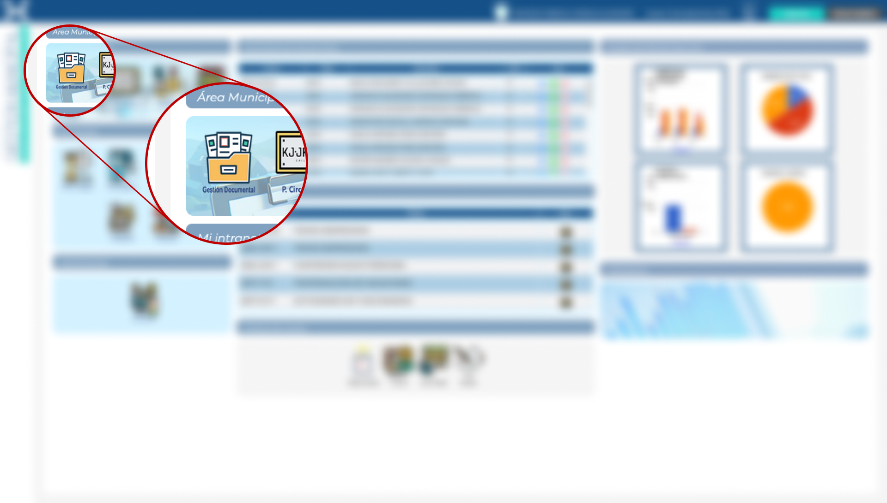
Ícono de Gestión Documental en Dashboard principal
Funciones del sistema
Al acceder al módulo de Gestión Documental se mostrarán las distintas herramientas del sistema. En la barra lateral se encuentran las funciones de:
- Gestión de documentos
- Informes del sistema
- Tablas del sistema
- Administración del sistema
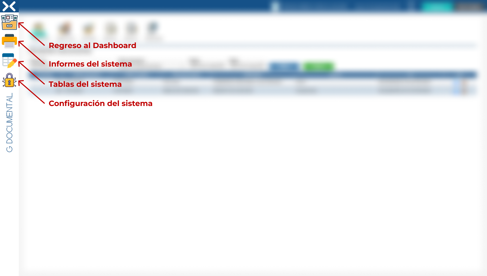
Secciones del sistema
Gestión Documental
En parte superior se encuentran las pestañas con los distintos elementos del sistema:
- Repeción de documentos
- Despacho de documentos
- Mis documentos
- Decretos exentos
- Decretos sugetos a registro
- Transparencia
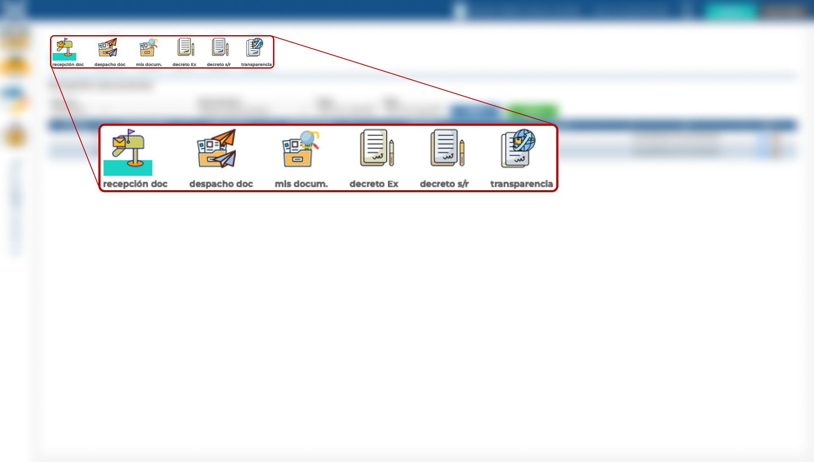
Pestañas del sistema
Recepción de documentos
En la tabla se muestran los distintos documentos que han entrado vía oficina de partes.
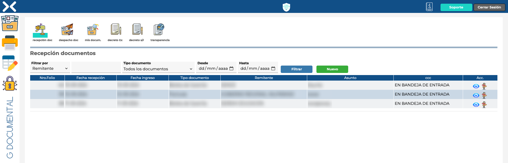
Recepción de documentos
En la parte superior de la tabla se dispone de filtros que facilitan la búsqueda de documentos dentro de los existentes.
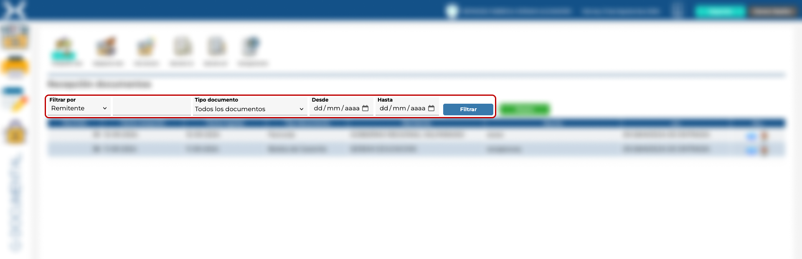
Filtros del sistema
Pulsando el botón "Nuevo" se accede a la pantalla en la que se puede cargar un nuevo documento.
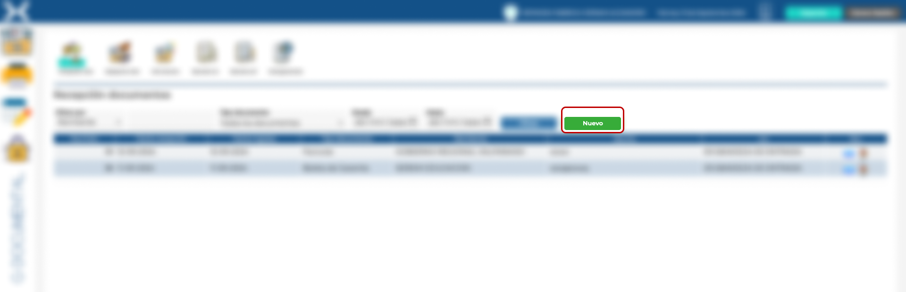
Nuevo documento
Después de hacer clic en el botón de "Nuevo" se accede al formulario de subida de un nuevo documento. En la sección de la izquierda se introducen los datos que permiten su identificación. Tras presionar en el botón de enviar, se mostrará la vista previa del documento en la sección de la derecha, y se adjuntará una hora de verificación del movimiento.
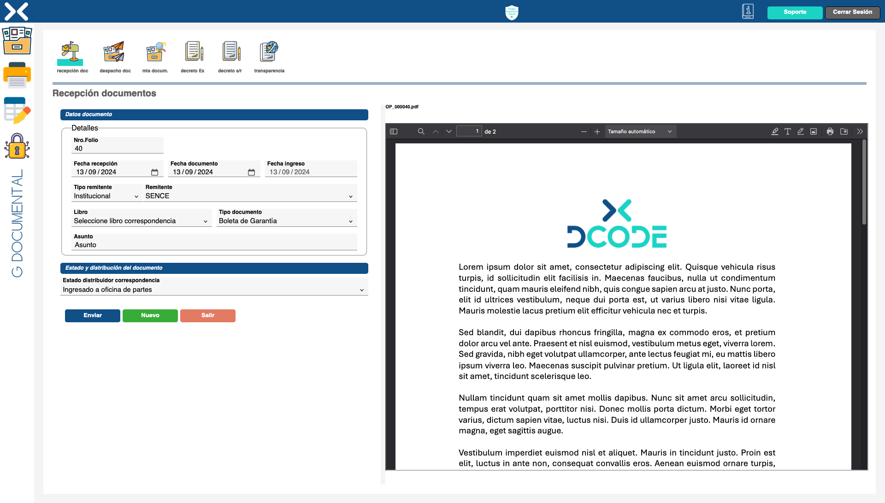
Formulario de subida de documento
En la columna acciones de la tabla se encuentran las funciones de:
- Vista previa: abre una ventana flotante en la que se puede consultar el documento.
- Estado del documento: permite consultar el estado del documento y su gestión.
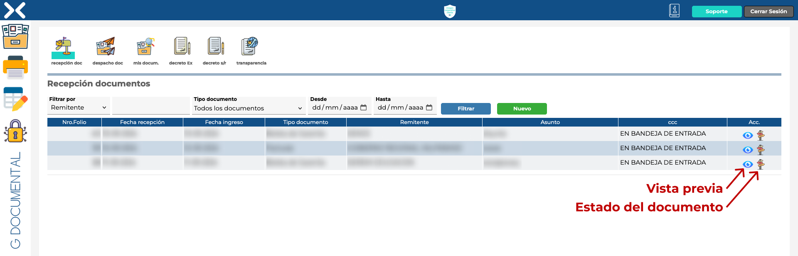
Filtros del sistema
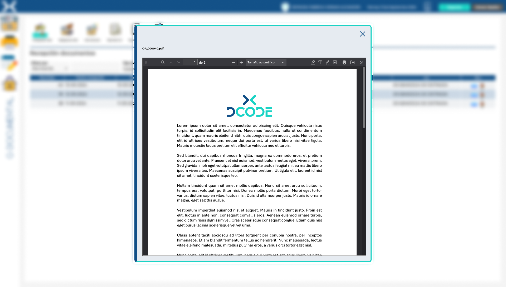
Vista previa del documento
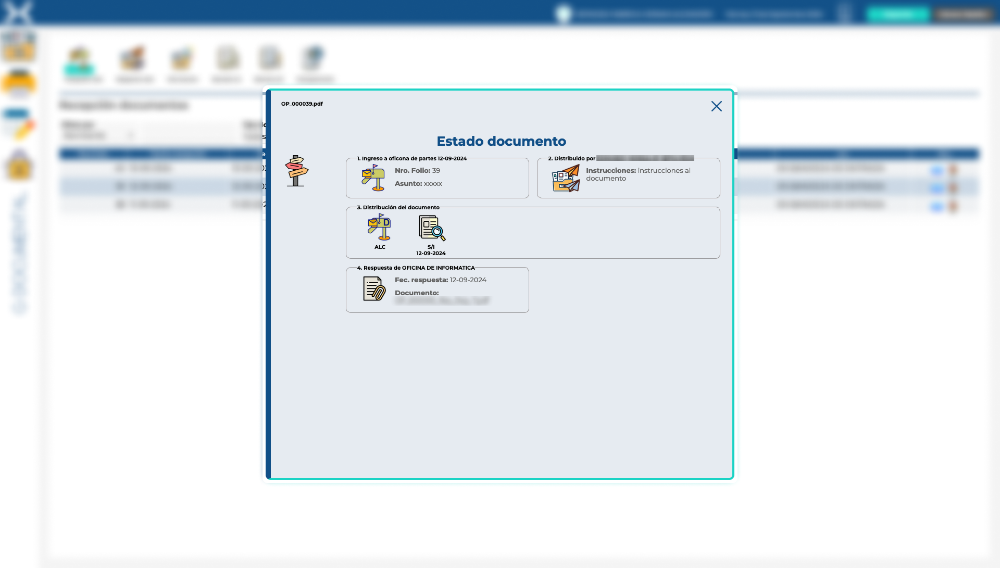
Estado del documento
Despacho de Documentos
Al acceder a la pestaña de "Despacho de Documentos" se mostrará la misma tabla con los documentos en esta pantalla, en la columna de "Acciones" se agrega la función de "Despacho de Documentos".
Presionando sobre el ícono del lápiz, se accederá a la pantalla de despacho del documento concreto.
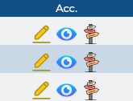
Botón de edición
Estando dentro del asistente de despacho, se mostrarán la información del documento. Existe un campo de observaciones en el que se pueden redactar comentarios que acompañen el despacho del documento.
En la parte inferior de la pantalla, se muestran a la izquierda los distintos departamentos de la Municipalidad. Para añadir un departamento a la lista de Destinatarios basta con hacer doble clic en el departamento destino.
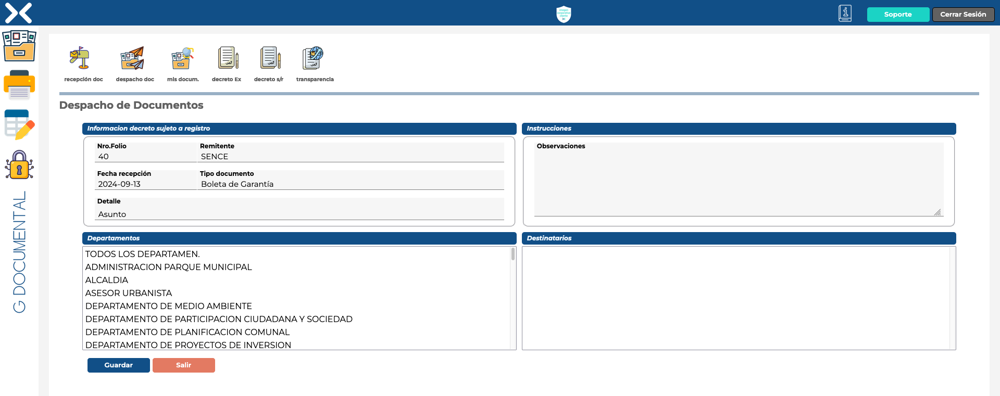
Formulario de despacho de documentos
Mis Documentos
En este apartado se muestran los documentos que corresponden al propio usuario. Al igual que en las dos pantallas anteriores, en la columna de acciones de la tabla se encuentran disponibles las funciónes de vista previa y consulta del estado del documento.
En esta sección, al presionar sobre el ícono del lápiz se entrará la pantalla de gestión del documento. Esta pantalla muestra la siguiente información:
- Datos documento: identificación del documento.
- Instrucciones y respuesta: campo dónde se puede introducir un texto libre que acompañe la respuesta al documento recibido.
De manera complementaria, debajo del campo de Instrucciones y respuesta, se muestra una tabla en la que se informa de los destinarios que ha tenido el documento y los botones desde los que se puede adjuntar la respuesta y realizar su posterior envío.
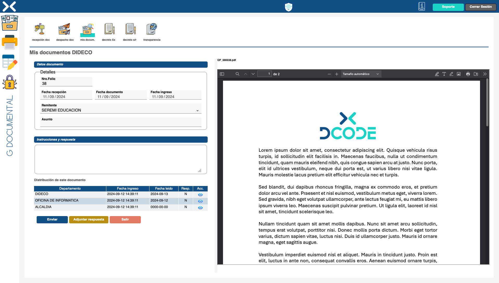
Formulario de despacho de documentos
Mantenedor decretos exentos
En esta tabla se muestran los decretos exentos del municipio. Presionando el botón de vista previa de la columna acciones, se puede visualizar el documento para su consulta.
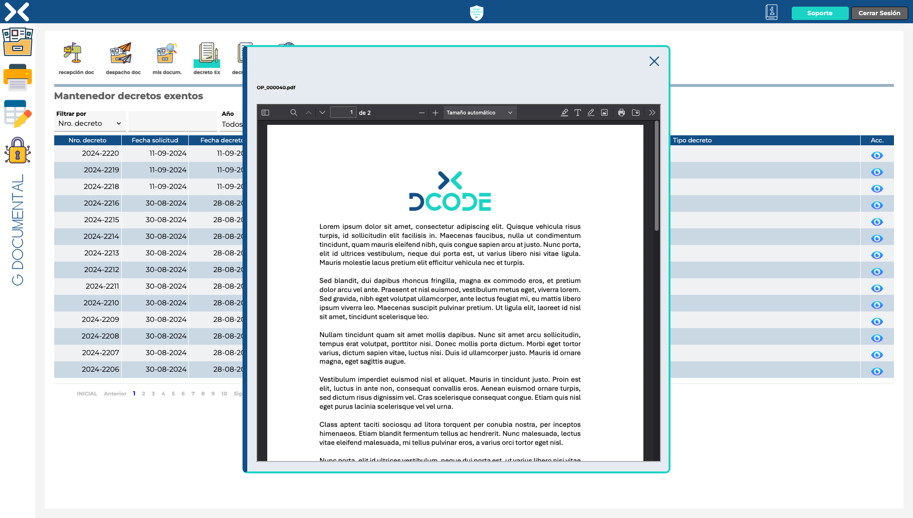
Mantenedor de decretos exentos
En caso de tener los permisos, al presionar sobre el botón de nuevo, se podrá acceder al formulario de carga de nuevos Decretos Exentos.
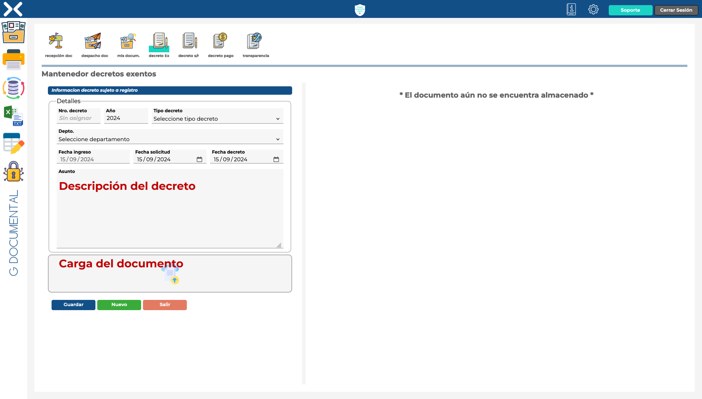
Mantenedor de decretos exentos
Mantenedor decretos sugetos a registro
En la tabla de Decretos Sugetos a Registro se pueden consultar los existentes en el municipio. De la misma manera que con la tabla anterior, en caso de tener los permisos adecuados, de podrán editar los registros existentes (pulsando el botón de edición de la columna acciones) o cargar nuevos Decretos pulsando en el botón de "Nuevo" situado sobre la tabla.
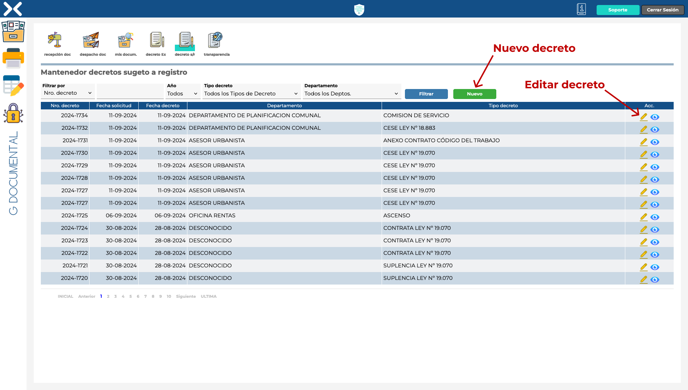
Decretos sugetos a registro
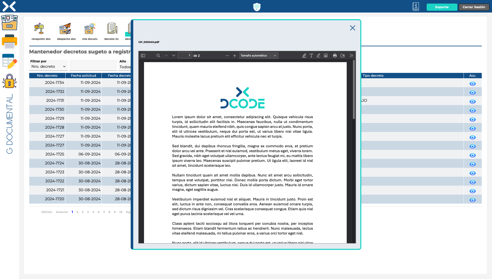
Consulta de decretos sugetos a registro
Transparencia
Desde la sección de transparencia se puede realizar la exportación de decretos a la extranet, para poder dejarlos a disposición pública. Para realizar la exportación, basta con pulsar sobre el ícono de la columna acciones.
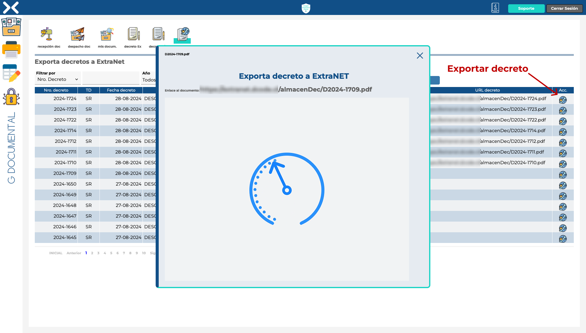
Exportación de decretos
Informes
En esta sección del sistema de Gestión Documental se encuentran predefinidos informes para su exportación en formato PDF. Se dispone de los siguientes informes:
- Decretos Exentos para Transparencia
- Decertos para Transparencia
- Exportar Decertos Transparencia a ExtraNET
- Gestión de Documentos
- Recepción de Documentos
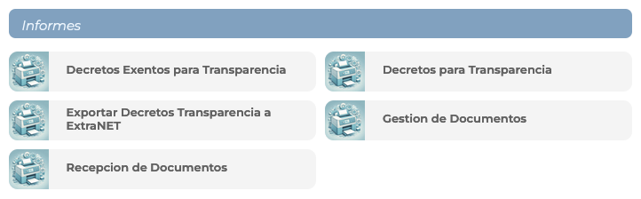
Informes de Gestión documental
Tablas del sistema
Para el sistema de Gestión Documental se dispone de las siguientes tablas:
- Libros de correspondencia
- Remitentes
- Tabla tipos de decretos
- Tipo de documentos
- Tipo de organizaciones
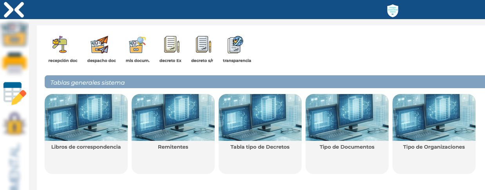
Tablas de Gestión Documental
Al acceder a una de las tablas, se podrán consultar los registros y se podrán agregar nuevos (a través del botón de "Nuevo") y editar o borrarlos mediante los íconos de la columna acciones de la tabla.
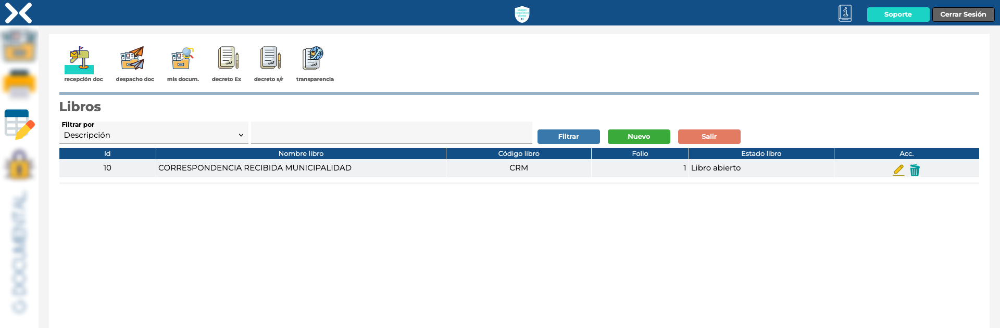
Tabla tipo de Gestión Documental
Administrador Sistema
En esta sección se accede a la tabla de configuración del sistema.
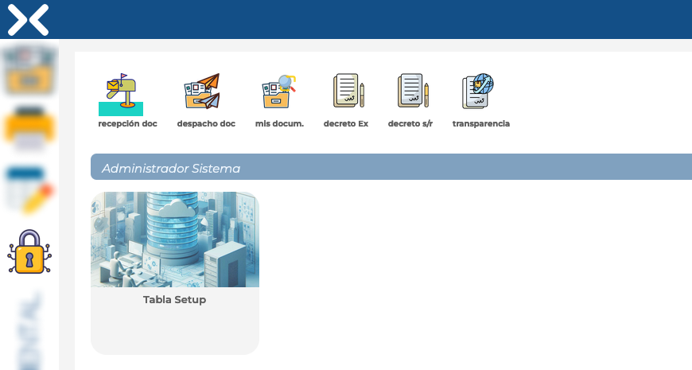
Administración de Gestión Documental